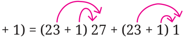
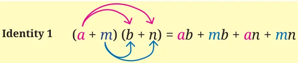
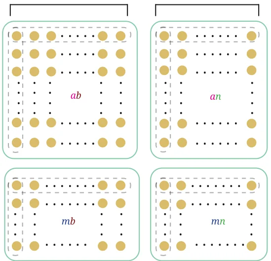

<!DOCTYPE html>
<html lang="en">
<head>
<meta charset="UTF-8">
<meta name="viewport" content="width=device-width,initial-scale=1">
<title>Chapter opener; 6.1 Some Properties of Multiplication; Increments in Products — We Distribute Yet Things Multiply</title>
<meta name="description" content="Class 8 Mathematics · Part 1 · We Distribute Yet Things Multiply · Chapter opener; 6.1 Some Properties of Multiplication; Increments in Products">
<link rel="icon" href="data:image/svg+xml,<svg xmlns='http://www.w3.org/2000/svg' viewBox='0 0 100 100'><text y='.9em' font-size='90'>📘</text></svg>">
<link rel="stylesheet" href="../../../assets/book.css">
<link rel="stylesheet" href="https://cdn.jsdelivr.net/npm/katex@0.16.11/dist/katex.min.css" crossorigin="anonymous">
</head>
<body>
<header class="topbar">
<div class="topbar-in">
  <div class="crumb">
    <span class="c1"><a href="../../../index.html">Library</a> · <a href="../../index.html">Class 8 Mathematics · Part 1</a></span>
    <span class="c2">We Distribute Yet Things Multiply · Chapter opener; 6.1 Some Properties of Multiplication; Increments in Products</span>
  </div>
  <a class="tb-btn" data-nav="prev" href="../../05-number-play/24-figure-it-out/index.html" title="Figure it Out">←</a>
  <details class="drawer"><summary class="tb-btn" title="Sections in this chapter">☰</summary>
<div class="drawer-panel"><div class="dh">We Distribute Yet Things Multiply</div><a href="../01-chapter-opener/index.html" aria-current="page">Chapter opener; 6.1 Some Properties of Multiplication; Increments in Products</a><a href="../02-figure-it-out/index.html">Figure it Out</a><a href="../03-fast-multiplications-using-the-distributive-property/index.html">Fast Multiplications Using the Distributive Property</a><a href="../04-special-cases-of-the-distributive-property-6.2/index.html">6.2 Special Cases of the Distributive Property; Square of the Sum/Difference of Two Numbers</a><a href="../05-investigating-patterns/index.html">Investigating Patterns</a><a href="../06-figure-it-out/index.html">Figure it Out</a><a href="../07-mind-the-mistake-mend-the-mistake-6.3/index.html">6.3 Mind the Mistake, Mend the Mistake</a><a href="../08-this-way-or-that-way-all-ways-lead-to-the-bay-6.4/index.html">6.4 This Way or That Way, All Ways Lead to the Bay</a><a href="../09-figure-it-out/index.html">Figure it Out</a><a href="../10-summary/index.html">SUMMARY</a><a href="../11-figure-it-out/index.html">Figure it Out</a><a href="../12-figure-it-out/index.html">Figure it Out</a><a href="../13-figure-it-out/index.html">Figure it Out</a></div></details>
  <a class="tb-btn" data-nav="next" href="../../06-we-distribute-yet-things-multiply/02-figure-it-out/index.html" title="Figure it Out">→</a>
  <button class="tb-btn" data-theme-toggle title="Toggle light / dark" aria-label="Toggle light or dark theme">◐</button>
</div>
<div class="progress"><span style="width:79.9%"></span></div>
</header>
<main class="wrap">
<div class="sec-head">
  <p class="eyebrow"><a href="../index.html">Chapter 6 · We Distribute Yet Things Multiply</a></p>
  <h1>Chapter opener; 6.1 Some Properties of Multiplication; Increments in Products</h1>
  <p class="sec-meta">Textbook pages 1–7 · 18 figures</p>
</div>
<article class="prose">
<figure class="fig wide"></figure>
<p>We have seen how algebra makes use of letter symbols to write general statements about patterns and relations in a compact manner. Algebra can also be used to justify or prove claims and conjectures (like the many properties you saw in the previous chapter) and to solve problems of various kinds. Distributivity is a property relating multiplication and addition that is captured concisely using algebra. In this chapter, we explore different types of multiplication patterns and show how they can be described in the language of algebra by making use of distributivity.</p>
<h2 id="s-6-1-some-properties-of-multiplication">6.1 Some Properties of Multiplication</h2>
<h2 id="s-increments-in-products">Increments in Products</h2>
<p>Consider the multiplication of two numbers, say, \(23 \times 27\).</p>
<ul class="qlist">
<li><span class="mk">1.</span><span class="lt">By how much does the product increase if the first number (23) is</span></li>
</ul>
<p>increased by 1?</p>
<ul class="qlist">
<li><span class="mk">2.</span><span class="lt">What if the second number (27) is increased by 1?</span></li>
<li><span class="mk">3.</span><span class="lt">How about when both numbers are increased by 1?</span></li>
</ul>
<p>Do you see a pattern that could help generalise our observations to the product of any two numbers? Let us first consider a simpler problem - find the increase in the product when 27 is increased by 1. From the definition of multiplication (and the commutative property), it is clear that the product increases by</p>
<ul class="qlist">
<li><span class="mk">23.</span><span class="lt">This can be seen from the distributive property of multiplication as</span></li>
</ul>
<p>well. If a, b and c are three numbers, then -</p>
<figure class="fig wide"></figure>
<aside class="sidenote"><p>a (b + c) = ab + ac</p></aside>
<p>This property can be visualised nicely using a diagram:</p>
<p>b columns c columns</p>
<p>. . . . . . . . . . . . . . . . . . . . . . \(^{a} ^{rows}\) . . . . . . . . . .. . . . .. . . . .. . . . . . . . . . \(^{a}^{b}\) . . . . . . . . . . . . . . . . . . . . . . . . \(^{a}^{c}\) . . . . . . . . . . .</p>
<aside class="sidenote"><p>a (b + c)</p></aside>
<p>This is called the distributive property of multiplication over addition. Using the identity a (b + c) = ab + ac with \(a = 23\), \(b = 27\), and</p>
<div class="mathblock"><p>\(c = 1\), we have</p><p>23 ( \(27 + 1) = 23 \times 27 + 23\)</p></div>
<aside class="sidenote"><p>Increase</p></aside>
<p>Remember that here, a (b + c) and \(23 (27 + 1)\) mean \(a \times\) (b + c), and \(23 \times (27 + 1)\), respectively. We usually skip writing the ‘ \(\times\) ’ symbol before or after brackets, just as in the case of expressions like 5a, xy, etc. We can also similarly expand (a + b) c using the distributive property as follows - (a + b) \(c = c\) (a + b) (commutativity of multiplication) = ca + cb (distributivity) = ac + bc (commutativity of multiplication) We can use the distributive property to find, in general, how much a product increases if one or both the numbers in the product are increased by 1. Suppose the initial two numbers are a and b. If one of the numbers, say b, is increased by 1, then we have -</p>
<div class="mathblock"><p>a ( \(b + 1) =\) ab \(\times a\)</p></div>
<aside class="sidenote"><p>Increase</p></aside>
<p>Now let us see what happens if both numbers in a product are increased by 1. If in a product ab, both a and b are increased by 1, then</p>
<div class="mathblock"><p>we obtain (a \(+ 1)\) (b \(+ 1)\).</p></div>
<figure class="fig wide"></figure>
<figure class="fig wide"></figure>
<p>Let us consider (a \(+ 1)\) as a single term. Then, by the distributive property, we have</p>
<p>(a \(+ 1)\) (b \(+ 1) =\) (a If \(a = 23\), and, \(b = 27\), we get property, we obtain</p>
<figure class="fig side-fig"></figure>
<div class="mathblock"><p>(a \(+ 1)\) (b \(+ 1) =\) (a \((23 + 1) (27 =\) ab \(= 23\)</p></div>
<figure class="fig"></figure>
<aside class="sidenote"><p>Increase</p></aside>
<p>Thus, the product ab increases by \(a + b + 1\) when each of a and b are increased by 1.</p>
<p>What would we get if we had expanded (a \(+ 1)\) (b \(+ 1)\) by first taking (b \(+ 1)\) as a single term? Try it?</p>
<p>What happens when one of the numbers in a product is increased by 1 and the other is decreased by 1? Will there be any change in the product? Let us again take the product ab of two numbers a and b. If a is increased by 1 and b is decreased by 1, then their product will be (a \(+ 1)\) (b \(- 1)\). Expanding this, we get</p>
<aside class="sidenote"><p>If \(a = 23\), and \(b = 27\), we get</p></aside>
<div class="mathblock"><p>(a \(+ 1)\) (b \(- 1) =\) (a \(+ 1) b -\) (a \(+ 1) 1 (23 + 1) (27 - 1) = (23 + 1) 27 - (23 + 1) 1 =\) ab \(+ b -\) (a \(+ 1) = 23 \times 27 + 27 - (23 + 1) =\) ab \(+ b - a - 1 = 23 \times 27 + 27 - 23 - 1\)</p></div>
<p>Increase Increase</p>
<p>Will the product always increase? Find 3 examples where the product decreases.</p>
<p>What happens when a and b are negative integers? Check by substituting different values for a and b in each of the above cases. For example, \(a = - 5\), \(b = 8\); \(a = - 4\), \(b = - 5\); etc. We have seen that integers also satisfy the distributive property, that is, if x, y and z are any three integers, then x (y + z) = xy + xz. Thus, the expressions we have for increase of products hold when the letter-numbers take on negative integer values as well. Recall that two algebraic expressions are equal if they take on the same values when their letter-numbers are replaced by numbers. These</p>
<figure class="fig wide"></figure>
<figure class="fig wide"></figure>
<p>numbers could be any integers. Mathematical statements that express the equality of two algebraic expressions, such as</p>
<div class="mathblock"><p>a (b \(+ 8) =\) ab \(+ 8a\),</p><p>(a \(+ 1)\) (b \(- 1) =\) ab \(+ b - a - 1\), etc.,</p></div>
<p>are called identities.</p>
<p>By how much will the product of two numbers change if one of the numbers is increased by m and the other by n? If a and b are the initial numbers being multiplied, they become \(a + m\) and \(b + n\). (a + m) (b + n) = (a + m)b + (a + m)n = ab + mb + an + mn The increase is an + bm + mn. Notice that the product is the sum of the product of each term of (a + m) with each term of (b + n).</p>
<figure class="fig"></figure>
<p>This identity can be visualised as follows -</p>
<p>columns columns</p>
<figure class="fig table-fig"></figure>
<p>a rows</p>
<p>m rows</p>
<aside class="sidenote"><p>(a + m) (b + n)</p></aside>
<figure class="fig wide"></figure>
<figure class="fig wide"></figure>
<p>being multiplied are increased or decreased by any amount. Can you see how this identity can be used when one or both numbers are decreased? For example, let us reconsider the case when one number is increased by 1 and the other decreased by 1. Let us write the product (a \(+ 1)\) (b \(- 1)\) as (a \(+ 1)\) (b + ( \(- 1)\). Taking \(m = 1\) and \(n = - 1\) in Identity 1, we have</p>
<div class="mathblock"><p>ab \(+ (1) \times b + a \times\) ( \(- 1) + (1) \times\) ( \(- 1) =\) ab \(+ b - a - 1\),</p></div>
<p>which is the same expression that we obtain earlier. Use Identity 1 to find how the product changes when</p>
<ul class="qlist">
<li><span class="mk">(i)</span><span class="lt">one number is decreased by 2 and the other increased by 3;</span></li>
<li><span class="mk">(ii)</span><span class="lt">both numbers are decreased, one by 3 and the other by 4.</span></li>
</ul>
<p>Verify the answers by finding the products without converting the subtractions to additions. Generalising this, we can find the product (a + u) (b - v) as follows. (a + u) (b - v) = (a + u) \(b -\) (a + u) \(v =\) ab + ub - (av + uv) = ab + ub - av - uv. Check that this is the same as taking \(m = u\) and \(n = - v\) in Identity 1. As in Identity 1, the product (a + u) (b - v) is the sum of the product of each term of \(a + u\) (a and u) with each term of \(b - v\) (b and ( - v)). Notice that the signs of the terms in the products can be determined using the usual rules of integer multiplication.</p>
<figure class="fig wide"></figure>
<p>We get</p>
<p>(a - u) (b + v) = ab - ub + av - uv, and (a - u) (b - v) = ab - ub - av + uv.</p>
<p>The distributive property is not restricted to two terms within a bracket. Example 1: Expand \(\frac{3a}{2}\) (a \(- b + \frac{1}{5}\) ). \(\frac{3a}{2}\) (a \(- b + \frac{1}{5}\) ) = ( \(\frac{3a}{2} \times\) a) - ( \(\frac{3a}{2} \times\) b) + ( \(\frac{3a}{2} \times \frac{1}{5}\) ). The terms can be simplified as follows -</p>
<div class="mathblock"><p>\(\frac{3a}{2} \times = \frac{3}{2} \times\) ( \(\times\) ).</p></div>
<figure class="fig wide"></figure>
<figure class="fig wide"></figure>
<p>Using exponent notation, we can write \(\frac{3}{2} \times\) ( \(\times\) ) \(= \frac{3}{2}\) . \(\frac{3a}{2} \times = \frac{3}{2} \times\) ( \(\times\) ) \(= \frac{3}{2}\) ab. \(\frac{3a}{2} \times \frac{1}{5} =\) ( \(\frac{3}{2} \times \frac{1}{5}\) ) \(= \frac{3}{10}\) So we get</p>
<p>\(\frac{3a}{2}\) (a \(- b + \frac{1}{5}\) ) \(= \frac{3}{2} a - \frac{3}{2}\) ab \(+ \frac{3}{10} a\).</p>
<p>Can any two terms be added to get a single term?</p>
<p>For example, can \(\frac{3}{2} a\) and \(\frac{3}{10} a\) be added to get a single term? We see that no two terms have exactly the same letter-numbers, which would have allowed them to be simplified into a single term. So, a further simplification of the expression is not possible. Recall that we call terms having the same letter-numbers like terms. Example 2: Expand (a + b) (a + b).</p>
<p>We have (a + b) (a + b) \(= (a+b) a +\) (a + b)b \(= a \times a + b \times a +\) ab \(+ b \times b\)</p>
<aside class="sidenote"><p>\(= a +\) ba + ab \(+ b\)</p><p>2 2</p></aside>
<p>Since ba = ab, we have two terms having the same letter-numbers ab (or, that are like terms), and so can be added -</p>
<div class="mathblock"><p>ba + ab = ab + ab \(= 2ab\)</p></div>
<p>So we get</p>
<div class="mathblock"><p>(a + b) (a + b) \(= a + 2ab + b\) .</p></div>
<p>Example 3: Expand (a + b) (a \(+ 2ab + b\) ).</p>
<div class="mathblock"><p>(a + b) (a \(+ 2ab + b\) ) = (a + b)a + (a + b) \(\times 2ab +\) (a + b)b</p></div>
<div class="mathblock"><p>= (a \(\times a\) ) + ba + (a \(\times 2ab) +\) (b \(\times 2ab) +\) ab + (b \(\times b\) )</p></div>
<p>The terms can be simplified as follows -</p>
<p>\(a \times a = a\) (why?)</p>
<p>ba \(= a b\)</p>
<div class="mathblock"><p>\(a \times 2ab = 2 \times a \times a \times b = 2a b\)</p></div>
<div class="mathblock"><p>\(b \times 2ab = 2 \times a \times b \times b = 2ab\)</p></div>
<p>\(b \times b = b\)</p>
<div class="mathblock"><p>So, (a + b)(a \(+ 2ab + b\) ) \(= a + a b + 2a b + 2ab +\) ab \(+ b\) .</p></div>
<p>We see that a b and 2a b have the same letter-numbers (or, are like terms) and so can be added -</p>
<figure class="fig wide"></figure>
<figure class="fig wide"></figure>
<div class="mathblock"><p>\(a b + 2a b = (1 + 2) a b = 3a b\).</p></div>
<p>Similarly, ab and 2ab are like terms and so can be added -</p>
<div class="mathblock"><p>ab \(+ 2ab = (1 + 2)ab = 3ab\) .</p></div>
<p>Thus, we have</p>
<div class="mathblock"><p>(a + b) \(\times\) (a \(+ 2ab +b\) ) \(= a + 3a b + 3ab + b\) .</p></div>
<p>A Pinch of History</p>
<p>The distributive property of multiplication over addition was implicit in the calculations of mathematicians in many ancient civilisations, particularly in ancient Egypt, Mesopotamia, Greece, China, and India. For example, the mathematicians Euclid (in geometric form) and Āryabhaṭa (in algebraic form) used the distributive law in an implicit manner extensively in their mathematical and scientific works. The first explicit statement of the distributive property was given by Brahmagupta in his work Brahmasphuṭasiddhānta (Verse 12.55), who referred to the use of the property for multiplication as khaṇḍa-guṇanam (multiplication by parts). His verse states, “The multiplier is broken up into two or more parts whose sum is equal to it; the multiplicand is then multiplied by each of these and the results added”. That is, if there are two parts, then using letter symbols this is equivalent to the identity (a + b) \(c =\) ac + bc. In the next verse (Verse 12.56), Brahmagupta further describes a method for doing fast multiplication using this distributive property, which we explore further in the next section.</p>
</article>
<nav class="pager"><a class="" data-nav="prev" href="../../05-number-play/24-figure-it-out/index.html"><span class="dir">← Previous</span><span class="t">Figure it Out</span><span class="ch">Number Play</span></a><a class="nx" data-nav="next" href="../../06-we-distribute-yet-things-multiply/02-figure-it-out/index.html"><span class="dir">Next →</span><span class="t">Figure it Out</span><span class="ch">We Distribute Yet Things Multiply</span></a></nav>
</main><footer class="site">Generated from the source textbook PDFs · text, figures and exercises belong to their respective publishers.</footer><script defer src="https://cdn.jsdelivr.net/npm/katex@0.16.11/dist/katex.min.js" crossorigin="anonymous"></script>
<script defer src="https://cdn.jsdelivr.net/npm/katex@0.16.11/dist/contrib/auto-render.min.js" crossorigin="anonymous"
  onload="renderMathInElement(document.body,{delimiters:[
    {left:'\\(',right:'\\)',display:false},
    {left:'$$',right:'$$',display:true},
    {left:'\\[',right:'\\]',display:true}],throwOnError:false,ignoredTags:['script','noscript','style','textarea','pre','code']})"></script>
<script src="../../../assets/book.js"></script>
<script defer src="../../../../assets/search.js"></script>
</body>
</html>
